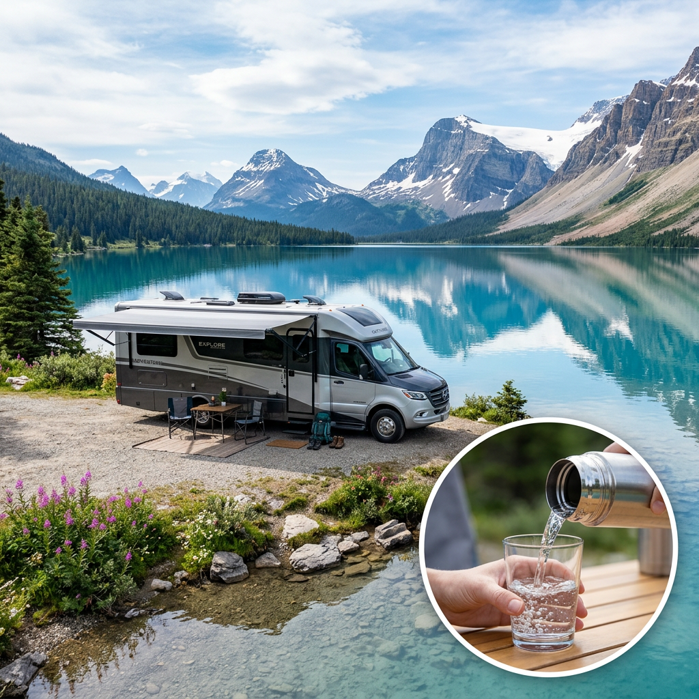
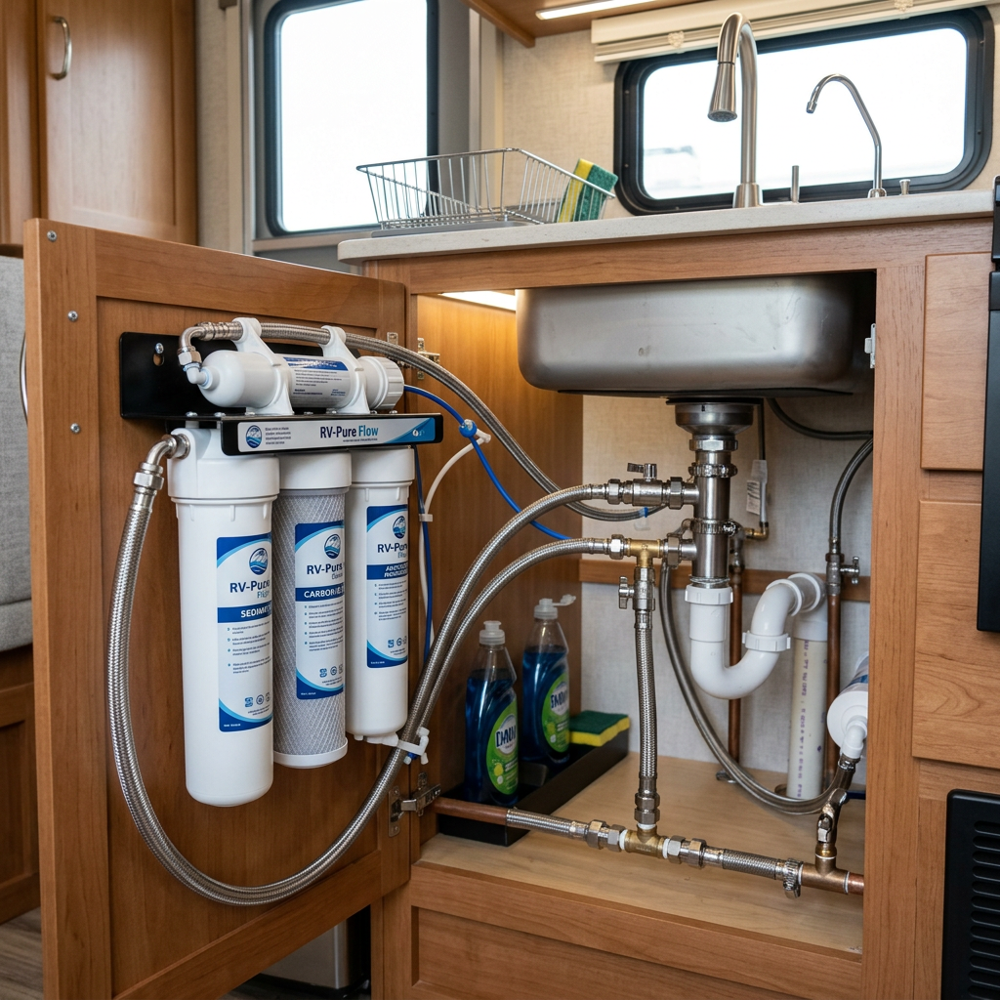
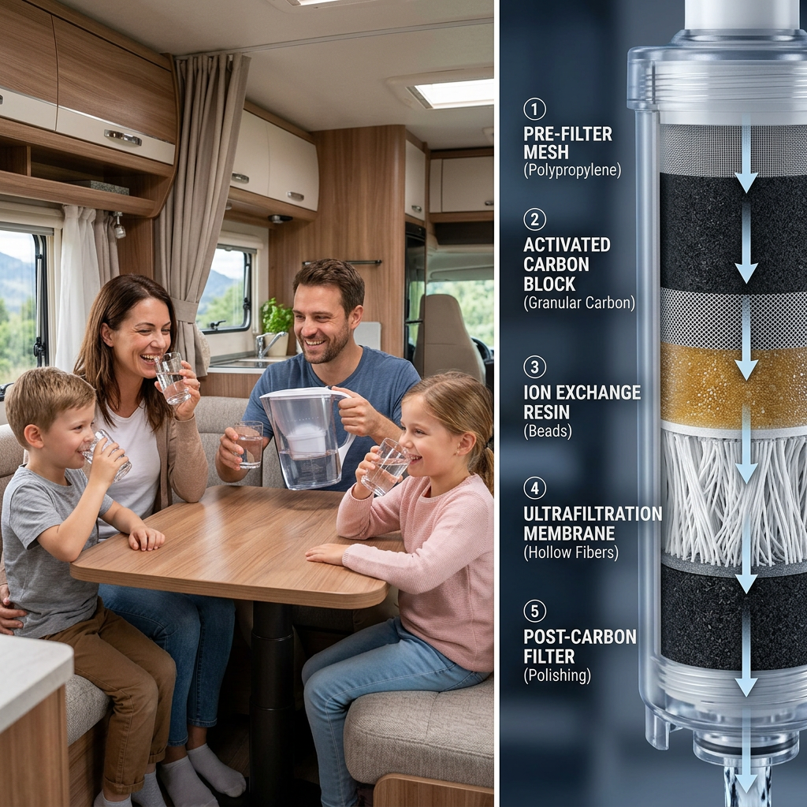

Best RV Water Filter 2024: Stop Drinking Campground Contaminants and Upgrade Your Trip
The Hidden Danger in Your RV’s Fresh Water Tank
You’ve spent thousands on your rig and months planning the perfect road trip. But there is a silent threat lurking in every campground hookup: unpredictable water quality. From heavy metals and chlorine to microscopic cysts and bacteria, 'potable' water at parks is rarely as clean as what you have at home. Using a sub-par filter doesn't just result in bad-tasting coffee; it can lead to gastrointestinal issues and permanent scale damage to your RV's plumbing and appliances.
As a veteran of the road, I know that a 'standard' blue inline filter isn't enough for high-intent travelers who value health and equipment longevity. To help you choose the ultimate defense for your mobile lifestyle, we’ve analyzed the two top-performing systems on the market today. Whether you need extreme ultrafiltration or a seamless replacement for existing tech, here is how the best RV water filters stack up.

| Product Name | Filtration Micron Rating | Capacity / Lifespan | Best For | Verdict |
|---|---|---|---|---|
| Waterdrop 15UC-UF | 0.01 Micron | 19,000 Gallons | Health-conscious full-timers | The Gold Standard for Purity |
| GLACIER FRESH RV Filter | 5.0 Micron (Carbon) | Variable / Seasonal | Budget-friendly replacement | Best Value for Standard Tech |
Deep Dive: Waterdrop 15UC-UF Under-Sink Ultrafiltration System
If you are looking for the absolute best RV water filter for drinking water safety, the Waterdrop 15UC-UF is in a league of its own. Unlike standard carbon blocks that only improve taste, this system utilizes an advanced Ultrafiltration (UF) membrane with a 0.01-micron pore size. To put that in perspective, it is capable of filtering out most bacteria and even some viruses that standard filters miss.
Why It’s a Game Changer for RVers:
- Massive 19,000 Gallon Capacity: For most RVers, this filter will last an entire year or more without a single maintenance thought.
- 0.01 Micron Precision: It effectively reduces bacteria, lead, fluoride, and chlorine while keeping essential minerals in your water.
- Space-Saving Design: Its vertical, slim profile fits perfectly in the cramped cabinets under an RV galley sink.
- Easy Installation: The push-to-connect fittings mean you can install this in under 10 minutes without a plumber.
The Waterdrop 15UC-UF is for the traveler who refuses to compromise. When you're hooked up to an old well-water system in the middle of the desert, this is the shield you want between that water and your family.
Check Price on Official Store
Deep Dive: GLACIER FRESH Replacement for RV Technology
Not every RVer needs a medical-grade ultrafiltration system; many simply need a reliable, high-flow replacement for their existing filtration housing. The GLACIER FRESH system is engineered specifically for those who want to maintain their current RV water tech while significantly lowering the cost of ownership without sacrificing performance.
Key Benefits for the Practical Traveler:
- High Flow Rate: Engineered to ensure your shower pressure doesn't drop to a trickle when the kitchen sink is on.
- Advanced Coconut Shell Carbon: This isn't cheap charcoal. It uses premium coconut shell carbon to strip away the 'rotten egg' sulfur smell and harsh chlorine taste common in campgrounds.
- Perfect Fit Guarantee: Designed to be a direct replacement for standard RV filtration systems, ensuring a leak-free experience.
- Cost-Effective: Allows you to maintain a high standard of water quality at a fraction of the price of OEM brand-name filters.
The GLACIER FRESH is the 'workhorse' filter. It’s perfect for the weekend warrior or the traveler who stays in established parks and wants dependable, great-tasting water for washing, cooking, and showering.
Check Price on Official StoreThe Verdict: Which Filter Should You Buy?
Choosing the best RV water filter depends entirely on your travel style and your health priorities. After testing both units, our recommendation is clear:
Choose the Waterdrop 15UC-UF if: You are a full-time RVer, you often boondock or stay in remote areas with questionable water sources, or you have a family with young children. The 0.01-micron filtration provides a level of safety that standard filters simply cannot match. It is an investment in your health and the longevity of your RV's internal systems.
Choose the GLACIER FRESH if: You primarily use your RV for vacations and stay at reputable campgrounds with treated city water. It is the perfect solution for removing unpleasant odors and tastes while keeping your maintenance costs low and your water pressure high.

Don't wait until you're at a campsite with brown, metallic-tasting water to realize you need an upgrade. Secure your water supply today and enjoy the peace of mind that comes with every drop.